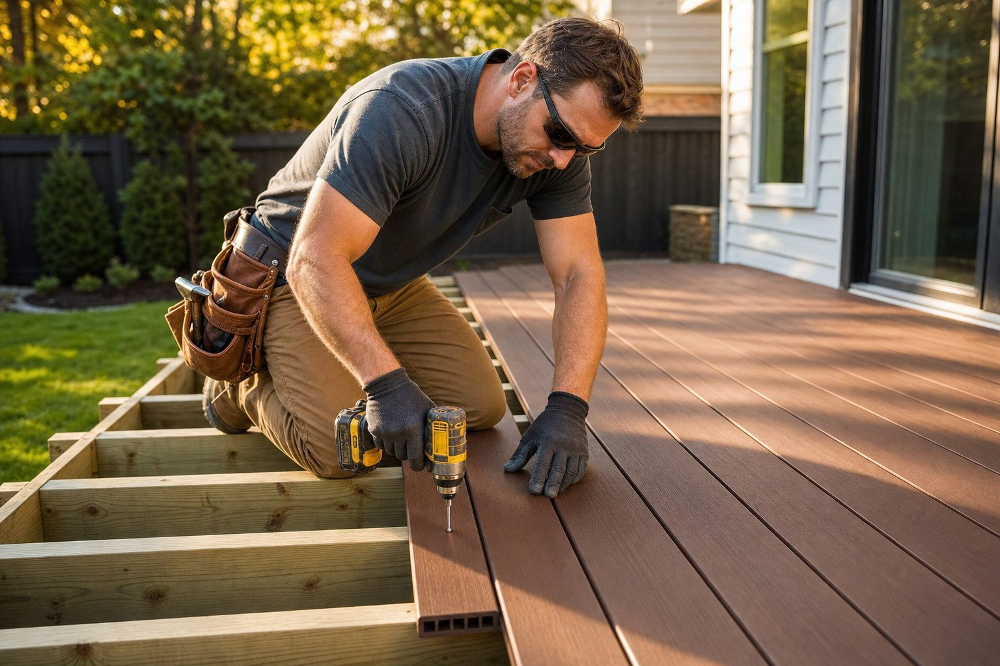
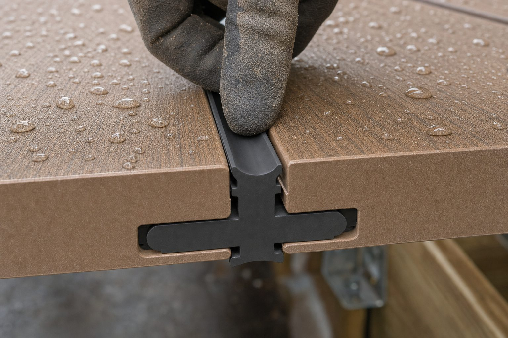

Most deck systems ask you to choose between a deck that looks good and a deck that protects the framing underneath. AmeriDex does both at once, but only if the crew installs the seal the way it is meant to go in. The good news for any builder reading this: there are no exotic tools and no surprises in the sequence. It is the same framing, fastening, and layout you already know, plus one new habit that pays off for the next 25 years.
This is a field overview, not a substitute for the official installation instructions that ship with the product. Treat it as the orientation you give a new lead carpenter before the first row goes down.
What the system actually is
The AmeriDex Dryspace System is two engineered parts working as one. The boards are cellular PVC with a proprietary ASA cap, so they will not rot, splinter, or feed mold, and they hold color in full sun. The drainage is the Dexerdry seal, an automotive-grade TPE component that locks into a routed channel on the edge of every board. Together they form an above-joist system: water sheds off the surface and the joists, beams, ledger, and fasteners stay dry. There is no below-deck tray to hang and no membrane to flash, because the water never gets past the deck surface in the first place.

Frame for drainage, not just for span
A good AmeriDex deck starts before a single board is set. Because the system moves water across the surface and off the edges, your framing should give that water somewhere to go.
- Pitch the field. Build a slight slope, roughly an eighth of an inch per foot, away from the house so the surface sheds toward the open edge or the fascia line.
- Run boards with the pitch. Lay the deck boards so the seal channels carry water in the direction you have pitched, not against it.
- Keep joist tops clean and true. A crowned or twisted joist telegraphs straight into the seam. Flatten the high spots before you start.
- Confirm joist spacing for your span and pattern. Tighter spacing is your friend on stair treads, picture-frame borders, and any diagonal layout.
Setting the first row
The first board sets the tone for the entire deck, so take the extra five minutes here. Snap a chalk line, set your starter board dead straight, and fasten it down before you think about the seal. Once that reference row is locked, every following board indexes off it, and the seams stay parallel all the way across.
The one new habit: seat the seal as you go
This is the step that makes the deck watertight, and it is the step crews new to the system tend to rush. The Dexerdry seal goes in as you build, board by board, not after the field is down. Press the seal into the routed channel along the full length of the board so the barbs grip and the top sits flush. When you bring the next board up, its channel captures the other side of the seal, and the joint closes. Done right, you get a continuous, sealed run from the house to the edge.
Seat the full length. Run the seal end to end and press it home along its whole length. A seal that is only pushed in at the ends will lift in the middle.
Do not stretch it. Let the TPE relax into the channel rather than pulling it tight, so it does not creep back over time.
Keep the channel clean. Sweep sawdust and grit out of the routed edge before seating. Debris in the channel is the most common cause of a seam that will not sit flush.
Fastening without fighting the seal
Fasten through the board into the joist the way the instructions specify, and let the system do its job at the seam. The deck board and seal carry a 25-year residential and 10-year commercial warranty, and the warranty package is built around the included Starborn epoxy or stainless screws and plugs, so use them. Stainless or coated-for-PVC fasteners protect your install in coastal and high-moisture builds, and they keep you inside warranty terms. Drive heads flush, not buried, so you do not dish the cap or distort the seam.
Borders, stairs, and the details that get noticed
Picture-frame borders and stair treads are where a deck reads as custom, and they are also where water management matters most because edges concentrate runoff. Plan your border so the field boards drain into or across it cleanly, and detail the stair nosings so water sheds off the front edge instead of wicking back into the stringers. These are the spots a homeowner runs their hand across at the final walkthrough, so it is worth slowing down for them.
Why this matters for your business
Every builder knows the real cost of a deck is not the day you finish it, it is the call three winters later. Trapped water rots joists, corrodes fasteners, and undermines the ledger, and the homeowner remembers who built it. An above-joist system keeps the structure you framed dry from day one, which means fewer warranty calls, a stronger referral pipeline, and a premium, wood-alternative deck you can stand behind. For the full mechanics behind the workflow, the above-joist deck drainage guide and the above-joist vs below-joist comparison lay it out, and why decks rot from the top down covers the failure mode you are designing out.
Because the seal is set between every board as the deck is built, AmeriDex is a new-construction system, which makes it a natural fit for builders quoting fresh decks. Want to spec it on your next job? Request free samples to put the board and seal in your hands, become a dealer to carry the line, or start a free quote to size a system for the project on your board right now.